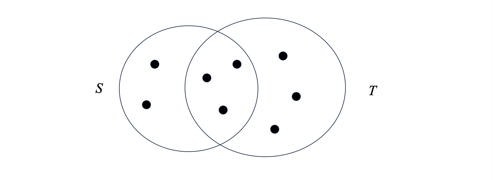

1. 문서의 \(k\)-Shingling (k-Shingling of Documents)
*유사한 문서를 찾기 위해서는 먼저 길고 복잡한 텍스트 문서를 수학적으로 비교 가능한 형태, 즉 “집합(Set)”으로 변환해야 합니다. 이를 위해 사용하는 기법이 바로 \(k\)-싱글링(\(k\)-Shingling)입니다.
1.1 개념과 예시
\(k\)-Shingling은 하나의 문서를 길이가 \(k\)인 짧은 문자열(부분 문자열)들의 집합으로 표현하는 방법입니다. 이 집합에 포함된 각각의 길이 \(k\)짜리 문자열을 “싱글(shingle)”이라고 부릅니다.
간단한 예시를 들어보겠습니다. “abcdabd”라는 문자열이 있고 \(k=2\)로 설정했다면, 이 문서의 2-shingles 집합은 다음과 같이 구성됩니다.
- 1~2번째 글자: “ab”
- 2~3번째 글자: “bc”
- 3~4번째 글자: “cd”
- 4~5번째 글자: “da”
- 5~6번째 글자: “ab” (이미 집합에 있으므로 중복 제거)
- 6~7번째 글자: “bd”
결과 집합: {ab, bc, cd, da, bd}
이러한 방식은 단어의 의미적 유사성보다는, 어휘적(lexical) 패턴이 얼마나 겹치는지, 즉 문자가 얼마나 똑같이 쓰였는지를 식별하는 데 매우 효과적입니다.
1.2 공백(Whitespace) 처리 전략
실제 텍스트 문서를 다룰 때는 띄어쓰기(blank), 탭(tab), 줄바꿈(newline) 등의 공백 문자를 어떻게 처리할지가 중요합니다. 일반적으로는 연속된 모든 공백 문자를 단일 공백(single blank) 하나로 치환하는 전처리 과정을 거쳐 노이즈를 줄입니다.
예시 (\(k=9\)): “The plane was ready for touch down”이라는 문장을 9-shingle로 나누면 다음과 같은 집합이 만들어집니다.
- “The plane”, “he plane”, “e plane w”, ” plane wa”, “plane was”, “lane was”, “ane was r”, “ne was re” 등.
2. 자카드 유사도 (Jaccard Similarity)
- 문서를 \(k\)-shingle들의 집합으로 변환했다면, 이제 두 집합이 얼마나 비슷한지 측정할 지표가 필요합니다. 이 때 가장 널리 쓰이는 척도가 바로 자카드 유사도(Jaccard Similarity)입니다.
2.1 자카드 유사도의 정의
- 자카드 유사도는 두 집합의 합집합 크기에 대한 교집합 크기의 비율로 정의됩니다. 즉, 두 집합이 가진 전체 고유 원소들 중에서, 공통으로 가지고 있는 원소가 차지하는 비중을 의미합니다. 수식으로는 다음과 같이 표현합니다. \[J(S, T) = \frac{|S \cap T|}{|S \cup T|}\]
- 여기서 \(S\)와 \(T\)는 비교하고자 하는 두 집합이며, \(| \cdot |\)는 집합의 크기(원소의 개수)를 나타냅니다.
2.2 직관적인 예시

- 위 그림의 예시를 수식에 적용해 보겠습니다.
- 두 집합이 공유하는 원소(교집합)의 개수: \(|S \cap T| = 3\)
- 두 집합에 있는 전체 고유 원소(합집합)의 개수: \(|S \cup T| = 2(\text{S 전용}) + 3(\text{공통}) + 3(\text{T 전용}) = 8\)
- 따라서 자카드 유사도 \(sim(S,T) = 3/8\) 이 됩니다.
3. 토큰으로서의 Shingles (Shingles as Tokens)
- \(k\)값을 크게 잡으면(예: \(k=9\)) shingle 문자열 자체가 길어져서 메모리를 많이 차지하게 됩니다. 이를 해결하기 위해 긴 문자열을 짧은 정수(Integer) 형태의 토큰(Token)으로 해싱(Hashing)하는 기법을 사용합니다.
3.1 9-Shingle 해싱 vs 4-Shingle 직접 사용
- 예를 들어 shingle을 4바이트(32비트) 정수로 해싱한다고 가정해 봅시다.
- 그렇다면 애초에 “4-shingle을 써서 바로 4바이트 문자로 취급하면 되지 않을까?”라는 의문이 들 수 있습니다. 하지만 9-shingle을 만들어서 4바이트로 해싱하는 것이 훨씬 더 좋은 결과를 가져옵니다. 그 이유는 다음과 같습니다.
- 희소성 (Sparsity): 실제 텍스트 문서에서 가능한 4글자 조합의 대부분은 잘 등장하지 않습니다.
- 공간 낭비: 따라서 고유한 4-shingle의 개수는 4바이트가 표현할 수 있는 최대 공간인 \(2^{32}\)개에 한참 못 미치게 됩니다 (\(\ll 2^{32}\)).
- 효율성: 반면, 길이가 더 긴 9-shingle을 추출한 뒤 이를 4바이트로 해싱(hash down)하면, 4바이트 공간의 거의 모든 해시값을 골고루 활용할 수 있어 해시 충돌(Collision)을 줄이고 데이터를 더 조밀하고 효과적으로 표현할 수 있습니다.
- 결과적으로 문서는 더 이상 문자열 집합이 아니라, 해시 함수를 통과한 버킷 인덱스(정수)들의 집합으로 표현됩니다.
4. 집합의 행렬 표현 (Matrix Representation of Sets)
- 이제 문서를 토큰 집합으로 만들었으니, 이를 컴퓨터가 처리하기 쉬운 구조인 특성 행렬(Characteristic Matrix)로 표현해 봅시다.
4.1 특성 행렬의 구조
- 행(Rows): 데이터셋에 존재하는 모든 고유한 원소(Element) 또는 토큰을 나타냅니다.
- 열(Columns): 각각의 문서(Set)를 나타냅니다.
- 값: 원소 \(e\)가 문서 집합 \(S\)에 포함되어 있다면 (\(e \in S\)), 행렬의 해당 행 \(e\)와 열 \(S\)가 교차하는 위치에 1을 기록합니다. 포함되어 있지 않다면 0을 기록합니다.
4.2 예제와 유사도 계산
- 강의 자료에 등장하는 간단한 특성 행렬 예시를 살펴보겠습니다.
| Row (Token) | Element (문자열) | 문서 \(S_1\) | 문서 \(S_2\) | 문서 \(S_3\) |
|---|---|---|---|---|
| 0 | “The plane” | 1 | 0 | 0 |
| 1 | “The cow” | 0 | 0 | 1 |
| 2 | “Alice and” | 0 | 1 | 0 |
| 3 | “Roses are” | 1 | 0 | 1 |
- 이 행렬의 열(Column)들을 비교하면 두 문서 간의 자카드 유사도를 쉽게 계산할 수 있습니다.
- 강의 슬라이드에 제시된 질문인 \(sim(S_1, S_3) = ?\) 를 계산해 봅시다.
- 교집합 크기 (\(|S_1 \cap S_3|\)): \(S_1\)과 \(S_3\) 모두 1인 행의 개수. 행 3(“Roses are”)이 유일하므로 값은 1입니다.
- 합집합 크기 (\(|S_1 \cup S_3|\)): \(S_1\)이나 \(S_3\) 중 적어도 하나가 1인 행의 개수. 행 0, 1, 3이 해당하므로 값은 3입니다.
- 최종 계산: 따라서 \(sim(S_1, S_3) = \frac{1}{3}\) 이 됩니다.
4.3 주의사항 (Warning)
- 이 특성 행렬은 직관적인 이해를 돕기 위한 개념적 모델일 뿐, 실제 시스템에서 데이터를 저장하는 방식은 아닙니다. 실제로는 행(전체 토큰의 수)의 개수가 수십억 개에 달하지만, 하나의 문서가 포함하는 토큰은 수천 개에 불과하므로 행렬의 대부분이 0으로 채워지는 극단적인 희소성(Sparsity) 문제가 발생하기 때문입니다. (이 문제를 해결하기 위해 다음 포스트에서 다룰 “Minhashing” 기법이 등장하게 됩니다.)